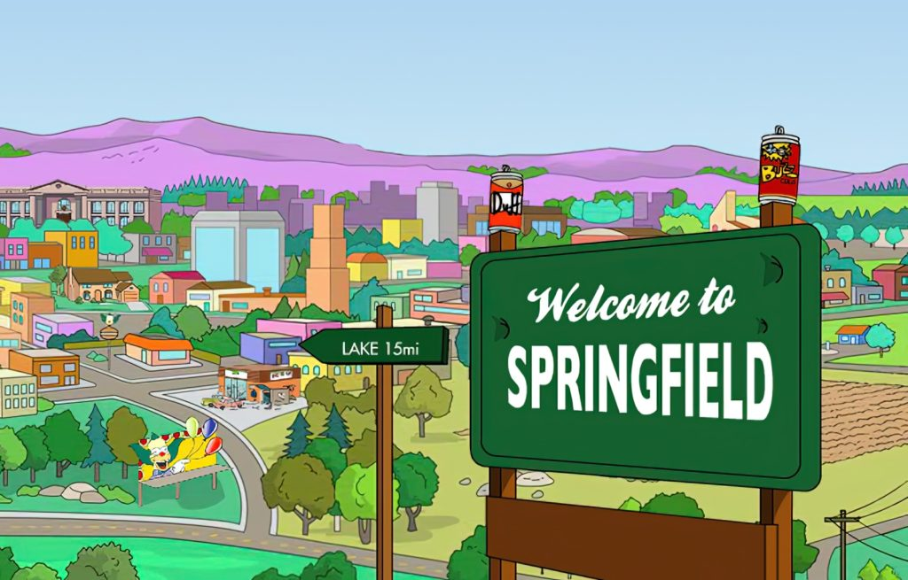

La Planta Nuclear
El lugar de trabajo de Homero Simpson y una de las siluetas más conocidas de la ciudad. Sus torres de enfriamiento dominan el paisaje y son parte de muchas de sus historias.

Hogar de la familia Simpson, Springfield es una ciudad ficticia de Estados Unidos que combina barrios suburbanos, comercios extravagantes y una comunidad donde cualquier día tranquilo puede terminar en una aventura. Su identidad se reconoce tanto por sus vecinos como por sus lugares cotidianos, que suelen convertirse en escenario de situaciones insólitas.
Algunos sitios que ayudan a reconocer el particular mundo de la serie:
El lugar de trabajo de Homero Simpson y una de las siluetas más conocidas de la ciudad. Sus torres de enfriamiento dominan el paisaje y son parte de muchas de sus historias.
El escenario de las travesuras de Bart y de las clases de Lisa. Entre el director Skinner, el sal├│n y el patio, la escuela refleja a su manera la vida cotidiana de los chicos del pueblo.
La tienda de Apu es una parada habitual para comprar algo r├ípido y uno de los comercios m├ís reconocibles de la serie. Su mostrador y sus estanter├¡as esconden m├ís de una an├®cdota.
El bar de Moe es el punto de reunión de Homero y sus amigos. Sus conversaciones telefónicas y el grupo de parroquianos forman parte del humor característico de Springfield.
Encontrá más detalles sobre estos y otros atractivos en Lugares turísticos.
El equipo local de b├®isbol, los Is├│topos de Springfield, es una excusa ideal para imaginar una tarde de tribunas, c├ínticos y pasi├│n deportiva al estilo de la ciudad.
Las competencias de cocina y los festivales comunitarios son parte del espíritu de Springfield. El concurso de chili es una propuesta especialmente memorable para quienes disfrutan los sabores intensos y las rivalidades locales.
El parque temático de Krusty ofrece juegos, espectáculos y una experiencia tan disparatada como su dueño. Es una de las opciones de entretenimiento más llamativas del universo de la serie.